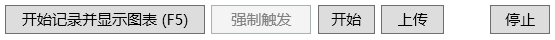
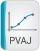

PCSuite 控件与 API 对照¶
先在 PCSuite 找到熟悉的按钮或文本框，再查程序要传的参数和调用顺序。点截图上的数字跳到对应说明，点截图可放大。
CNC 数控路径¶
- 1 圆弧运动段 · A、B 终点与 CCW
- 两条组轴映射到 XY 平面时，用
ArcXY/aamotion_arc_xy。A、B 对应终点；圆心填绝对坐标。G 代码的 I、J 要加到本段起点后再传给 SDK。图中列表只概览终点和方向。 - 2 设置矢量参数 · 速度百分比、加速度、减速度
- 用
SetMotionProfile把轮廓参数写入 CNC 队列。加速度和减速度使用 CNC units/s²。速度百分比是倍率，段速度另由运动段给出。 - 3 开始 CNC／暂停 CNC／停止 CNC
- 对相应组调用
IGroupAxis.Begin、Pause、Stop。开始按钮对应执行已经排好的路径。在空队列中使用SetStartPositions时先写它，再写轮廓和运动段。省略它时，首个运动段用直线。
下载 PCSuite 轨迹配置 CNCDemoFiles.acnc。在 PCSuite 数控工具中加载此 XML 轨迹，核对轴组、路径、起点和行程。要供 SDK 的 RunCNCProgramFromFile 使用，点击「创建用户程序」并选导出的文本源文件。原始配置把「设置起点」排在直线后面。导出前，如保留该段，应移到空队列首位，并确认起点与两轴实际坐标一致。完整的 SDK 文件 Demo 使用另一份小行程直线程序。
矢量运动¶
- 1 线性／弧形
- 分别用
VectorLinear/aamotion_vector_linear_with_mask，或VectorArc/aamotion_vector_arc。选择弧形时使用两轴，圆心填绝对坐标。 - 2 勾选轴和目标框
- 勾选项决定成员轴，目标填各轴的绝对位置。用编号最小的成员轴发起；图中 A、B 选中，由 A 发起。
- 3 速度、加速度、减速度
- 传给矢量运动函数的合成路径参数。一段运动使用一组矢量速度和加减速。只写参数可用
SetVectorParam。 - 4 开始向量／停止向量
VectorLinear或VectorArc配置并发起本段运动。停止调用StopVec/aamotion_stop_vec，传入发起轴。
电子齿轮¶
一次调用写入整套配置并启动从轴：C# 用 AAMotionAPI.GearBegin，C 用 aamotion_gear_begin。

- 1 端口、类别和关键字／Master
- 例如选 A 端口的
PosRef，C# 的GearMotionConfig.Master或 C 的aamotion_gear_config.master填APosRef。启动函数的轴参数传从轴，例如 B。 - 2 输入因子与主模数
- 分子、分母对应
RatioNumerator、RatioDenominator，C 字段为ratioNumerator、ratioDenominator。65536 / 65536 是 1:1。主模数对应MasterModRev/masterModRev，无模长填 0。 - 3 直接模式／间接（轮廓）模式
MotionMode/motionMode填 5 或 6。间接模式按从轴轮廓追随，图中的速度及加减速应单独配置到从轴。- 4 开始运动／停止
- C# 用
AAMotionAPI.GearBegin，C 用aamotion_gear_begin。停止请求发给从轴，例如用aamotion_stop。随后读取从轴状态确认已启动或停止。
DataLogger 采集¶

- 1 持续时间／间隔／实际间隔
- 用
DataLoggerConfiguration.DurationSec（秒）和GapMs（毫秒）填写请求。实际间隔由控制器决定；上传后使用实际时间轴。 - 2 触发器／Source／掩码／Value
- 对应
DataLoggerTrigger.Type、Source、Mask、Value。图中?PosRef使用活动端口占位符，程序指定实际通道，例如APosRef。要采集的信号另填ParamsToRecord。 - 3 触发时刻
- 对应
TriggerPosition。填 10 表示记录窗口的 10% 用来保留触发前的数据。 - 4 开始／强制触发／上传／停止／F5
- 参考分步 API。先
ConfigureDataLogger，再StartDataRecording；需要手动触发时等状态 2 并调用ForceDataLoggerTrigger。正常记录结束（状态 4）后调用UploadDataLoggerData。停止用StopDataRecording。F5 把记录、上传及 PCSuite 绘图连起来；程序可用RecordData/aamotion_data_rec_record采集，再自行绘图。
回零¶

- 1 回零模式
- 直接找 Index 用
HomeToIndex。找限位开关再找 Index 用HomeToLimitThenIndex。用位置误差判定硬限位再找 Index 用HomeToHardStopThenIndex，按电机堵转判定硬限位再找 Index 用HomeToHardStopByStuckThenIndex，只找硬限位用HomeToHardStop。从主编码器锁存 Index 时，先确认LockSrcZeroSupported。详见搜索和锁存。 - 2 方向／快慢速度／加减速／超时
- 搜索方向
direction为 +1 或 −1。快速fastSpeed用于找限位，慢速slowSpeed用于找 Index。加速度传accel，超时timeoutMs用毫秒。速度和加速度是控制器单位（counts/s、counts/s²），不按用户单位换算；timeoutMs是每一步运动的超时。 - 3 配置并应用／回零序列
- PCSuite 把快速配置展开成步骤表。堵转后找 Index 的
HomeToHardStopByStuckThenIndex/aamotion_home_to_hard_stop_by_stuck_then_index使用速度（counts/s）、电流（mA）和持续时间（ms）三个阈值，与截图里按位置误差判定硬限位的方式分别配置。 - 4 执行回零／回零状态和最后一步
- 已配置控制器回零表时，用
Home/aamotion_home执行。读HomingStep观察步骤，用IsHomed或确认HomingStat = 100判断成功。
PVAJ¶

PCSuite · PVAJ以下控件名按 PCSuite 实现整理。C# 中对应同名的 AAMotionAPI.Pvaj* 方法。
- 1 加载列表
- 把轨迹的表头和 P/V/A/J 点分别交给
aamotion_pvaj_write_header和aamotion_pvaj_write_point。PCSuite 会读取文件并下载列表；使用 SDK 时由应用准备点数据。 - 2 校验模式／校验／Arm
- 完整校验用
aamotion_pvaj_validate的模式 1，确认aamotion_pvaj_is_validated后用aamotion_pvaj_arm。修改点表后，下一次 Arm 之前要重新校验。 - 3 组成员／开始运动／状态
- 单轴使用模式 22，多轴组使用 23。确认成员轴准备就绪后调用
aamotion_pvaj_begin，用aamotion_pvaj_get_status读执行索引和剩余行数。见 PVAJ 参数与完整流程。
电子凸轮 ECAM¶
- 1 活动的 ECAM 表／循环计数器
- 表编号对应
tableNum，范围 1–10。运行时通过ECAM_GetCycleCount读循环次数。 - 2 索引开始和结束／循环索引和次数
- 用
ECAM_SetTableRange和ECAM_SetCycleParams。表范围是GenData下标，循环范围是其中要重复的区段。 - 3 主定义／初始位置／间隙
- 用
ECAM_SetMaster、ECAM_SetMasterIni、ECAM_SetGap。间隙表示主轴每多少计数推进一个表点。ECAM_ConfigureTable可一次下发表范围、循环及主轴相关设置。 - 4 开始运动／停止 ECAM
- 用
ECAM_Start／ECAM_Stop，启动后用ECAM_IsActive核对从轴状态。 - 5 打开 ECAM 编辑器窗口
- PCSuite 编辑器用于整理点和预览曲线。应用已计算好表时，用
ECAM_SetTableData写入从轴的表。